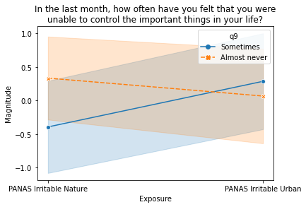

Does human individuality influence our response to
nature-based design?
Use arrow keys or click/tap arrows in bottom-left
corner to navigate
Jason Gaekwad
6th November 2024
Welcome to the web presentation!
- This presentation is displayed using the reveal.js framework
- Use the arrow keys or click/tap arrows in bottom-left corner to
navigate between slides
- Press the ‘Escape’ key to display a slide overview, and click or
‘Escape’ again to zoom into the selected slide.
General
- This content was presented at Urban Transitions 2024 in Sitges,
Spain.
- The work presented herein is a work in progress for
my PhD thesis, expected to be completed early 2025.
Licensing
Overview
“the innate tendency to focus on life and lifelike
processes” E.O. Wilson (1986)
“a person is a biological organism, a social being,
and a unique individual” Y.-F. Tuan (1990)
Do we need to add a people dimension to the existing
biophilic design dimensions of nature and place?
Laboratory Study
Sixty-one participants
Exposure to images of ‘urban’ and ‘natural’ environments in SE
Australia
Urban Environment example
 Natural Environment example
Natural Environment example
Laboratory study
Collection of rich quantitative & qualitative data:
- demographics & nature connection
- emotion, attention, stress
- nature experiences
- gaze (eye-tracking)
Positive and Negative Affect Schedule (Watson et al. 1988)
Results
Positive Affect & Connectedness to
Nature
ηp2 =
0.29
Positive Affect & Childhood
Nature
ηp2 =
0.30

Irritability & Life
Stress
ηp2 =
0.12
The data suggest that individual characteristics do
weakly influence the effects of nature
Urban scenes have a greater negative effect on individuals with:
- lower connection to nature
- higher life stress
Limitations
- Individuals with lower connection to nature are a minority
- Lossy acquisition of some physiological data
- Laboratory rather than immersion
- Non-extreme environments
Continuing work
- Analysis of attention & stress data
- The practical significance of effects (strong vs. weak)
- Thematic analysis of qualitative data
- Signal processing and qualititative analysis of gaze
(eye-tracking)